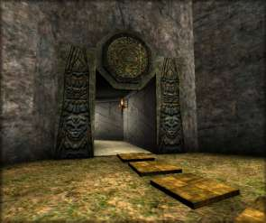

|

The Master's Study `Tall shadow women that pad, The study is large and beautifully furnished in red and gold. As you walk in, you realize that this room - unlike many of the others - has been carved from solid, virgin rock. The walls are panelled in dark stained oak but the high vaulted ceiling is made of unseamed stone, intricately carved. Before you, a couple of large French windows look out over the Herb Garden. Karne is waiting for you, drinking a red wine from a strangely elongated cup. He offers you a glass. Ah, there you are. I was wondering where you'd got to. Come in, come in - a drink? Your room's suitable I hope? Excellent, and you're welcome. So - how can I help you? You must have some reason for travelling in these parts, perhaps seeking someone or something? Or are you just curious? If so maybe I can help. I have an extensive Library and Gallery, both of which I'm very proud. Much of the contents is my own I'm afraid to say, though I'm looking to include some other people's work if I can. You're more then welcome to visit them, of course. If it's answers to rather more scientific questions that you seek, then you might like to explore my Workshop and Laboratory. If other people, then try the Hall of Mirrors or the Circle of Stones - though it's getting rather dark to be wandering around outside. All depends what you're after really! Alternatively, you can just explore, there's a Fencing Salle and a Studio out there, if you can find them! I give you the Freedom of my Lair of course - I trust you will respect that. |

 © Michael.Wright 1999 karne@innocent.com
© Michael.Wright 1999 karne@innocent.com
(8=:[ plaintive plea - please don't steal my art work! ]:=8)